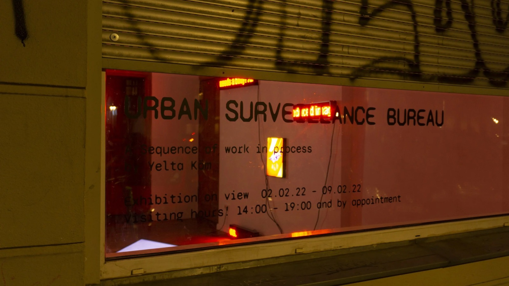
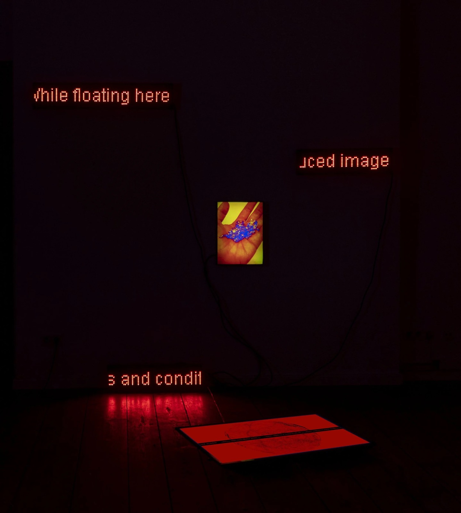
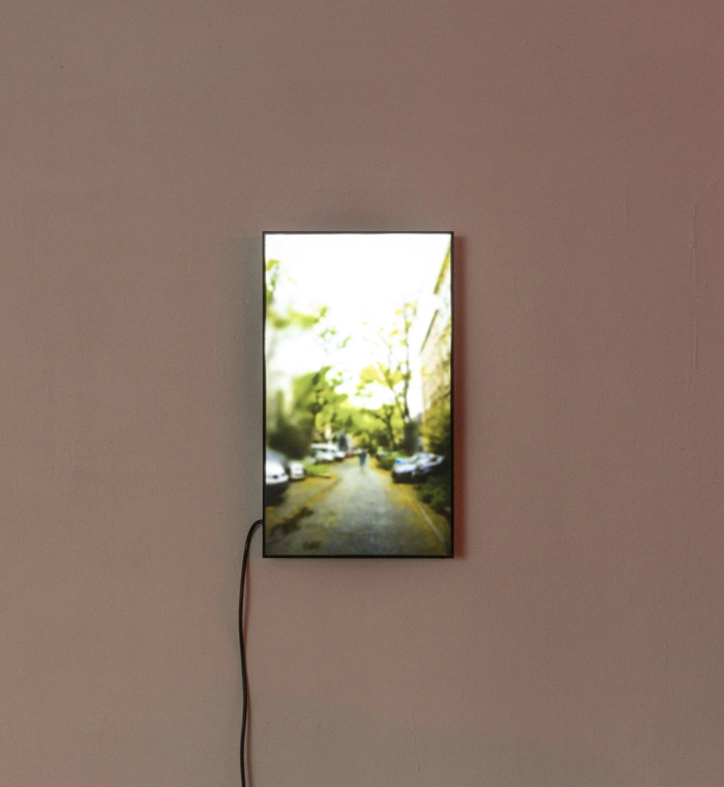
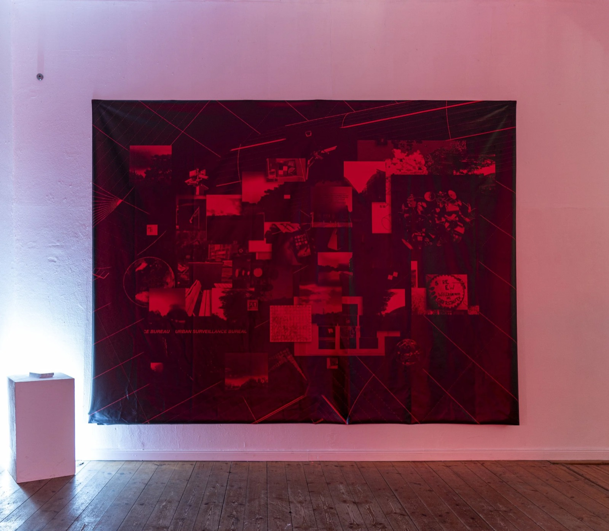
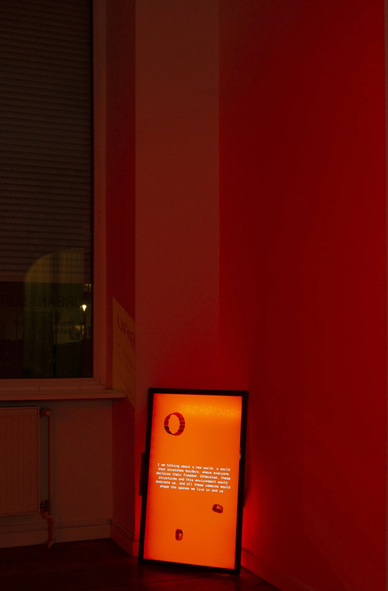
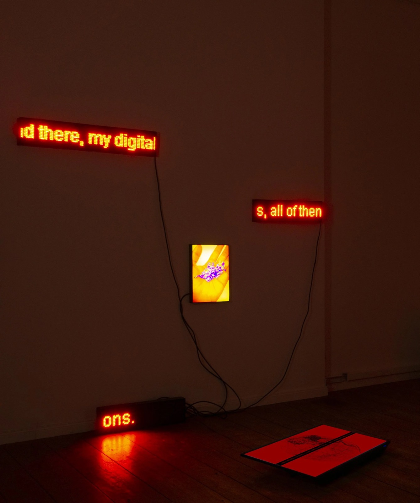
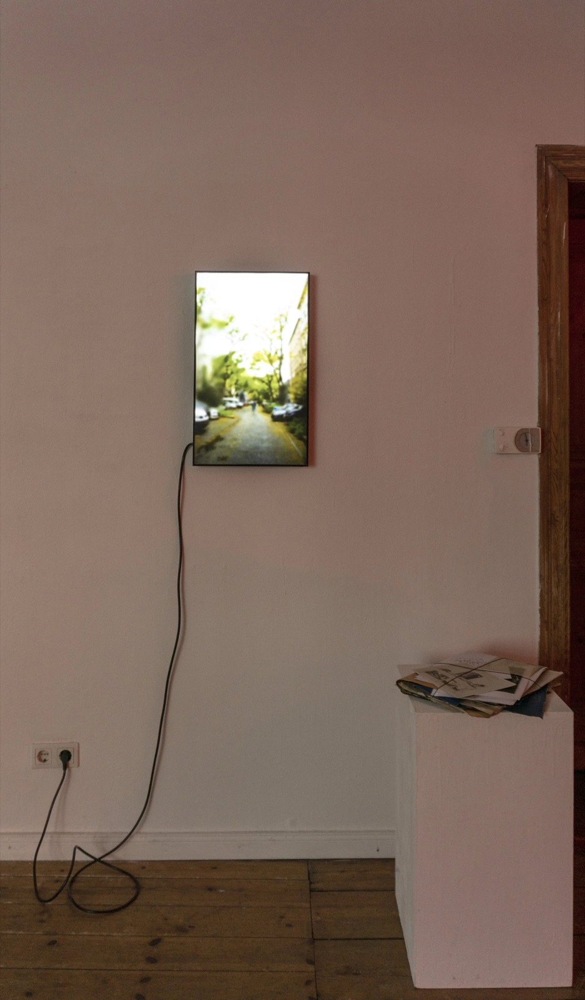

2022 · Installation, Exhibition (solo), Counter-mapping · TOP e.V., Berlin
Urban Surveillance Bureau: A Sequence of Work in Process
Fictional bureau staged as a mock-up government information point with surveillance tools, antennas, screens and camouflage surfaces, an interactive cell-tower mapping website and dissident walking tours through Berlin.
- No.
- 2201
- Date/s
- 2022
- Type/s
- Installation, Exhibition (solo), Counter-mapping
- For
- vorspiel transmediale
- With
- Serap Kaçmaz, Elif Çak
- Place
- TOP e.V., Berlin
- Status
- realised
- Shown
- vorspiel transmediale 2022, TOP e.V. Transdisciplinary Project Space, Berlin, 02.—09.02.2022
- Links
- original ↗ · project site ↗









Press
- 2022-01-17Urban Surveillance Bureau: A Sequence of Work in Process by Yelta Köm ↗TOP e.V.